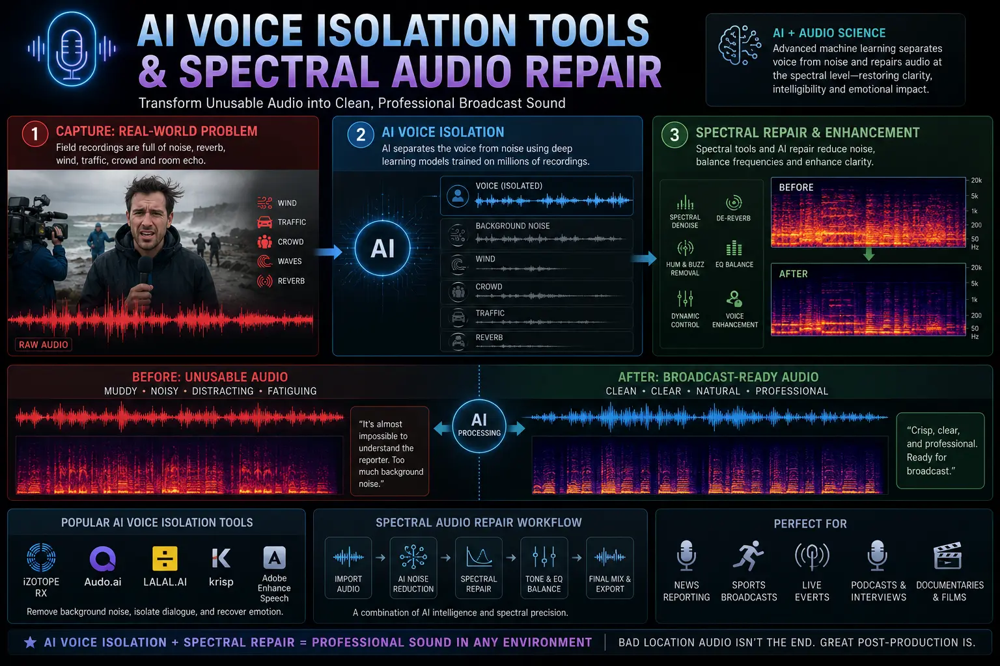
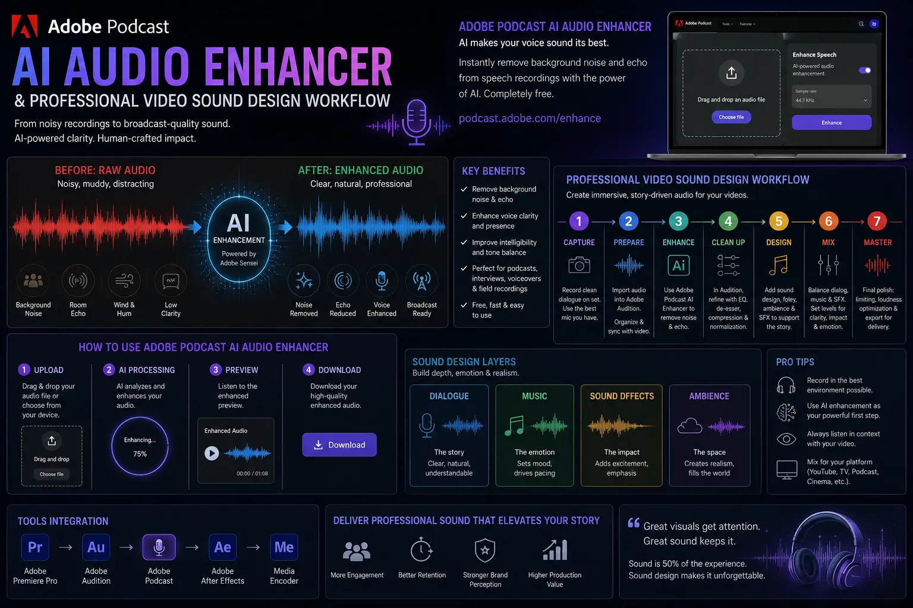

How AI Voice Isolation Restores Terrible Location Audio to Broadcast Quality
The Harsh Reality of Location Audio in Commercial Videography
In high-stakes corporate video production, commercial filmmaking, and brand storytelling, field audio is notoriously unpredictable. Camera crews and directors frequently find themselves capturing crucial interviews, executive testimonials, or real-world product demonstrations in acoustically hostile environments. From reverberant corporate boardrooms with floor-to-ceiling glass walls and echoey tiled trade show floors to noisy industrial plants, bustling city streets, and windy outdoor launch venues, pristine acoustic conditions are an absolute rarity in field production.
For decades, audio engineers faced an agonizing trade-off when removing background noise from video. Traditional noise reduction algorithms relied on static noise profiles and subtractive notch filtering. While these legacy tools could dampen steady state hums like air conditioning units or tape hiss, they heavily compromised human vocal frequencies in the process. The resulting dialogue almost always sounded thin, muffled, hollow, or metallic—carrying the unmistakable robotic artifacts of aggressive phase cancellation. When executives sounded like they were speaking inside a tin can, video editors were forced into costly studio reshoots or forced to settle for sub-par content that damaged brand credibility.
The paradigm has shifted radically with the advent of deep-learning artificial intelligence. Modern AI Voice Isolation Tools have revolutionized post-production by replacing crude frequency gating with advanced neural signal separation. By training deep neural networks on tens of thousands of hours of clean dialogue and noisy environment profiles, these intelligent systems can pinpoint, extract, and rebuild vocal harmonics from chaotic soundscapes. Today, video creators can salvage seemingly ruined field recordings and convert them into broadcast-grade audio, establishing a new standard for Product Sound Design Videography and enterprise media delivery.
The Science Behind Neural Speech Separation and Spectral Audio Repair
To understand why modern AI models succeed where legacy noise reduction failed, one must look at how digital audio is processed. Traditional noise gates work entirely in the time domain or through basic frequency bands, cutting sound levels whenever the signal drops below a predetermined threshold. However, human voice harmonics overlap heavily with environmental noise frequencies across the spectrum.
In contrast, Spectral Audio Repair visualizes sound using a 2D or 3D spectrogram, mapping time along the horizontal axis, frequency along the vertical axis, and energy intensity via color density. When paired with neural networks, AI spectral speech repair operates at the structural level of human speech:
- Vocal Formant Tracking. Neural networks identify fundamental frequencies (F0) and harmonic overtones produced by human vocal folds, allowing the algorithm to separate voice structures from random ambient sound.
- Intelligent De-Reverberation. Reflections caused by hard concrete or glass surfaces produce late reflections that overlap with subsequent words. AI models estimate the impulse response of the room and eliminate the reverberant tail without cutting off natural word endings.
- Transient Signal Separation. Unpredictable acoustic events—such as slamming doors, car horns, clinking glassware, or mic rustle—are recognized as non-vocal transients and removed dynamically frame by frame.
- Neural Harmonic Resynthesis. Where original vocal frequencies are heavily masked or damaged by distortion, generative speech models resynthesize lost upper-end air and lower-end body, restoring natural vocal resonance.
Broadcast-Quality Speech
Transforms distorted, noisy field dialogue into crisp, intimate studio-grade speech suitable for television and digital campaigns.
Elimination of Reshoot Costs
Saves thousands of dollars and weeks of delay by salvaging imperfect location takes that would otherwise require re-recording.
Accelerated Editing Turnaround
Streamlines post-production timelines by reducing hours of manual frame-by-frame spectral keyframing to a single click.
Seamless Acoustic Consistency
Matches dialogue recorded across wildly different locations into a unified soundscape across multi-scene corporate films.

Leading AI Audio Tools and NLE Plugin Integration
The post-production landscape offers a versatile range of AI-powered audio enhancement solutions catering to independent filmmakers, corporate video editors, and agency post-houses alike. Selecting the right application depends on project turnaround times, budget, and desired depth of surgical control.
For rapid cloud-based processing, the Adobe Podcast AI audio enhancer has emerged as a game-changer. By uploading noisy mono or stereo WAV files, editors can apply state-of-the-art speech enhancement algorithms that strip away intense background noise and room bounce in seconds. The software effectively re-synthesizes the speaker's voice to sound as if it were captured with an expensive large-diaphragm condenser microphone inside a professionally treated acoustic booth.
For editors who prefer working directly inside non-linear editors (NLEs), utilizing dedicated voice clarity plugins for Premiere Pro, DaVinci Resolve Studio, and Final Cut Pro offers real-time playback and precise parameter adjustment. Tools like iZotope RX Voice De-noise, Waves Clarity VX Pro, CrumplePop, and Accentize DeRoom allow editors to tweak noise suppression strength, protect background ambiance, and fine-tune vocal presence without leaving their master timeline.
Furthermore, dedicated NLE tools excel at fixing echoing mic audio in hollow office spaces. When lapel or shotgun mics capture excessive room reflections, applying real-time neural de-reverberation strips out ambient echo while maintaining vocal warmth and clarity.
Integrating AI Voice Isolation into Professional Video Sound Design
While AI Voice Isolation Tools perform miraculous isolation on spoken dialogue, clean dialogue is only one component of a compelling soundtrack. Completely dry, isolated voice tracks can sound unnaturally sterile if dropped into a video without contextual audio design. This is where comprehensive professional video sound design becomes critical.
Once the dialogue stem is isolated and cleaned using AI spectral speech repair, sound designers rebuild the sonic environment around the speaker:
- Controlled Room Tone Layering. A subtle bed of clean, synthesized ambient room tone is reintroduced under the dialogue to avoid jarring "dead air" silences between spoken phrases.
- Foley & Tactile Sound FX. For commercial products, tactile foley effects—such as button clicks, fabric rustles, metallic latches, or motor hums—are added to elevate the visual action.
- Dynamic Music Bed ducking. Strategic side-chain compression ensures that background score tracks automatically duck around the isolated voice frequencies, maximizing legibility without sacrificing emotional impact.
- Sub-Bass and High-End Polish. Precise parametric EQ and multiband compression bring out low-end warmth and smooth high-end air, delivering a polished broadcast master that meets EBU R128 and ATSC A/85 loudness standards.
AI Restoration Software
- Adobe Podcast AI audio enhancer.
- iZotope RX 11 Advanced Spectral Repair.
- Waves Clarity VX Pro neural engine.
- Accentize DeRoom Pro & Voice Gate.
Core Repair Techniques
- Dynamic removing background noise from video.
- Surgical fixing echoing mic audio in office spaces.
- Multi-band AI spectral speech repair tracking.
- Real-time voice clarity plugins for Premiere Pro.
Sound Design Delivery
- Custom Product Sound Design Videography.
- Layered room tone & tactile Foley integration.
- EBU R128 loudness compliance (-24 LUFS).
- Broadcast & social media stem mastering.

Solving Common Field Audio Nightmares: Real-World Scenarios
To illustrate the power of modern post-production audio workflows, let us examine three frequent field recording challenges and how AI-driven techniques resolve them:
Scenario A: Industrial Factory Floor Interviews
During a corporate manufacturing showcase, executives are interviewed alongside active assembly lines producing heavy mechanical hums and pneumatic pressure releases. Traditional filtering would destroy vocal clarity. By applying AI Voice Isolation Tools combined with Spectral Audio Repair, the constant mechanical hum is completely excised while retaining the natural punch and authoritative tone of the speaker's voice.
Scenario B: Echoey Glass Boardroom Presentations
An executive pitch video recorded in a minimalist glass-walled conference room suffers from severe room reverberation and hollow mic echo. Editors use specialized voice clarity plugins for Premiere Pro to target the acoustic reflection decay times. By fixing echoing mic audio, the boxy, distant presentation is transformed into an intimate, high-impact voiceover performance.
Scenario C: Outdoor Product Launches in Heavy Wind
An outdoor product demonstration video suffers from sudden gusts of wind striking the microphone diaphragm, causing heavy low-end distortion. Using AI spectral speech repair and cloud tools like Adobe Podcast AI audio enhancer, the low-frequency wind thumps are removed and masked vocal frequencies are dynamically synthesized, preserving the energy of the live product demo.
Why Brand Audio Quality Directly Drives Video Conversion Rates
In today's fast-paced digital ecosystem, video content is consumed across mobile feeds, web pages, streaming platforms, and broadcast television. High-quality visuals attract attention, but flawless audio sustains engagement. When decision-makers watch a corporate video, poor sound quality immediately signals amateur production values, casting doubt on product quality and enterprise reliability.
By combining cutting-edge Product Sound Design Videography with meticulous audio restoration, brands create an immersive viewer experience. Pristine dialogue paired with polished professional video sound design commands authority, builds consumer trust, and drives measurably higher conversion rates across all marketing channels.
Conclusion
Terrible location audio is no longer a death sentence for corporate or commercial video productions. Through the power of AI Voice Isolation Tools, Spectral Audio Repair, and Adobe Podcast AI audio enhancer, post-production teams can salvage hostile field recordings and elevate them to flawless broadcast standards. Whether you are removing background noise from video or fixing echoing mic audio, neural signal processing empowers storytellers to deliver pristine audio regardless of recording conditions.
At The PhD Ads in Madurai, our production team combines state-of-the-art voice clarity plugins for Premiere Pro with bespoke professional video sound design and Product Sound Design Videography. We ensure every corporate video, brand story, and commercial production delivers crystal-clear speech and immersive soundscapes that captivate your target audience.
Key Topics
Ready to Restore Your Location Audio to Studio Broadcast Quality?
At The PhD Ads in Madurai, we combine AI voice isolation tools, spectral audio repair, and professional video sound design to transform location recordings into broadcast-grade commercial assets. Contact our sound design team today to discuss your next video project.
Email: team@e2o.in